In GitHub Desktop, it's easy to add or update files.
This is your default view:
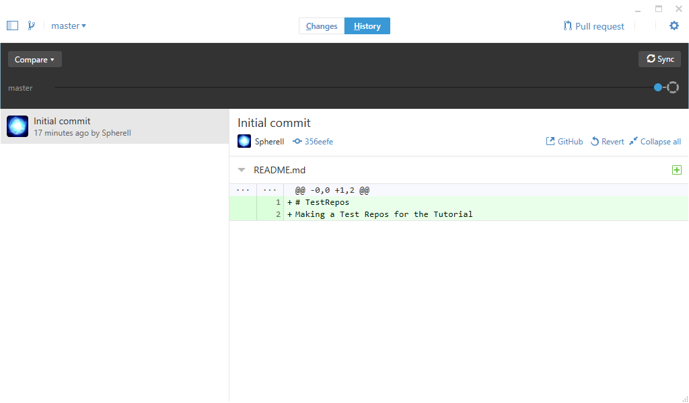
To see changes, click on the "Changes" button, in the center of the screen.
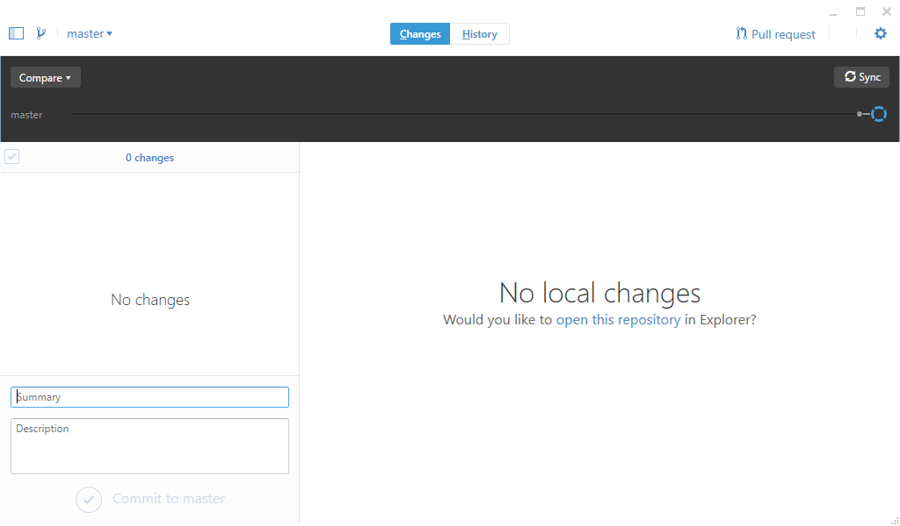
You'll see No Local changes, if you haven't added any new files, or made any changes. Let's click on "open this repository" in Explorer
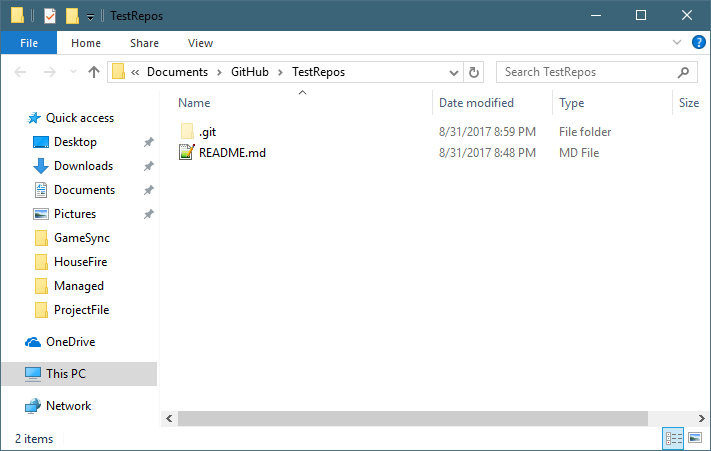
In a fresh depot, if you selected "Initialize this Repository with a ReadMe.md", you'll see the ReadMe file. You can edit this in Notepad++, or your favorite editor.
So what now? Since this is Explorer, you can create folders, and add files of your mod as you normally would.
For this example, we used Valmar's Overhaul as a template.
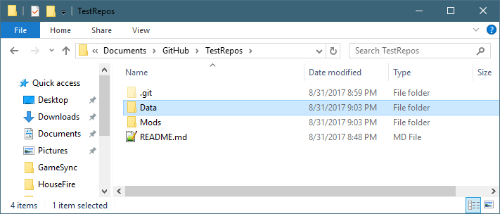
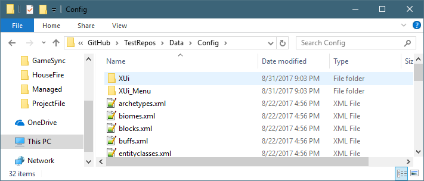
It's important to maintain the correct folder structure of your mod, placing all the files in the right spot. This makes it easier for the users to download and install the mods.
After you are done with your Explorer changes, go back to GitHub Desktop, and look at the Changes now:
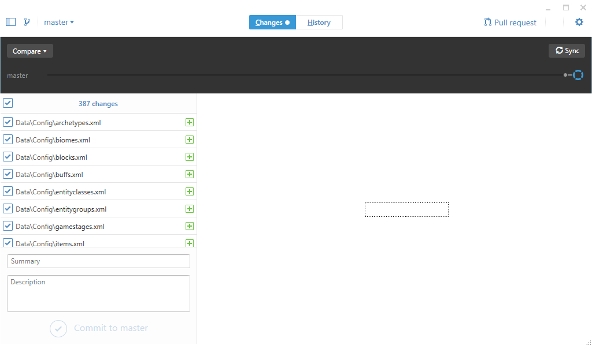
In the above, we can see we made 387 changes. Let's do a test commit, which means, we are going to upload the files.
In the Summary box, enter in a short description of your changes.
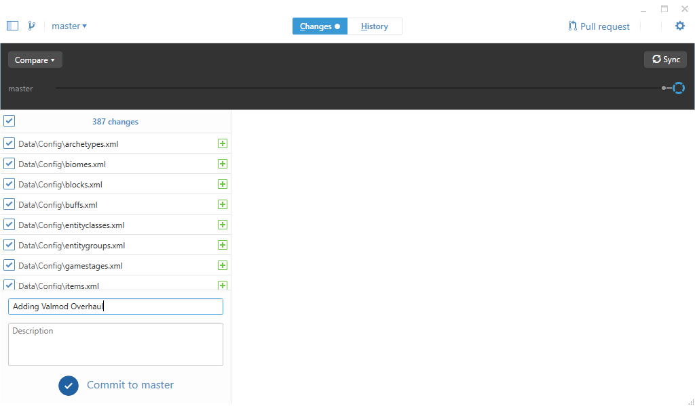
Then click on Commit To Master. This button won't become enabled until you type something in the Summary.
The Commit to master button will then gray out as it uploads.
Once it's complete, you'll be back to the "no local changes". That's because the files that are online are exactly the same as your local copy.
Next, click on the Sync button at the top of the screen.
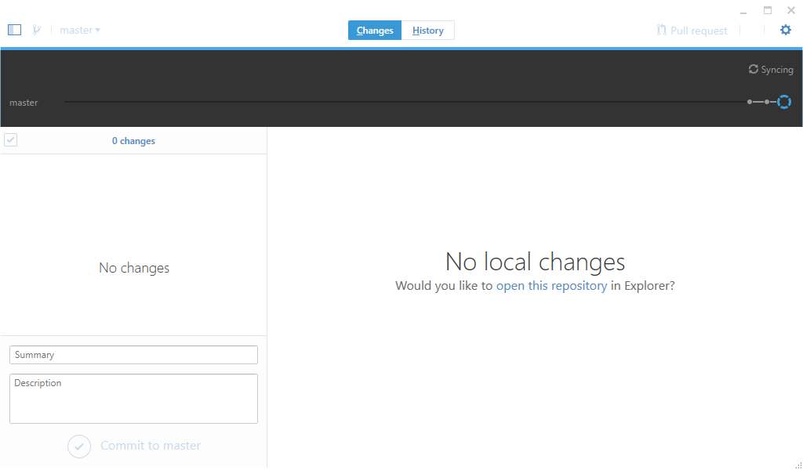
Click on the History button at the top of the screen
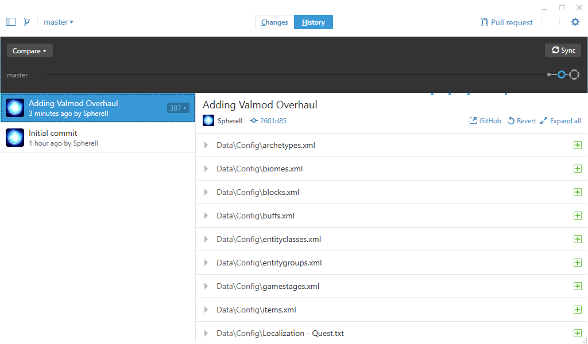
This window shows all the changes we've done.
If you click on the Green plus, you'll see the changes that were done to that file
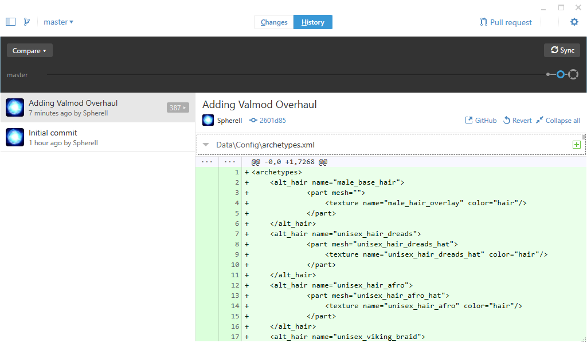
We can then check the website again to see it available:
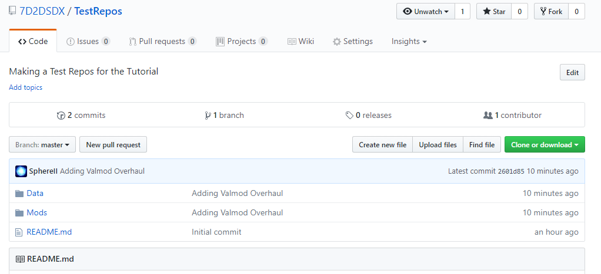
Created with the Personal Edition of HelpNDoc: Free HTML Help documentation generator